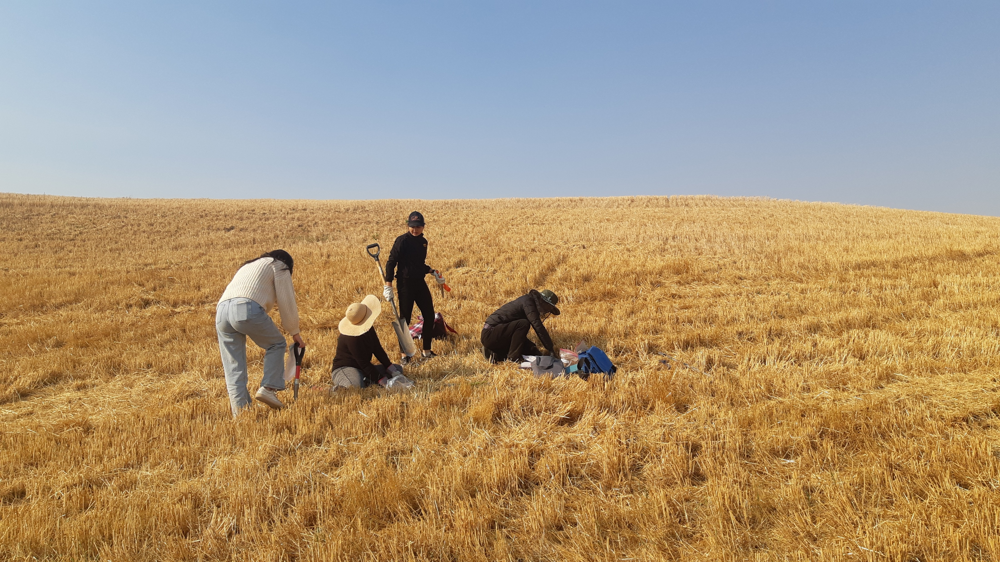

Making microbiome function reliable. For the people and the planet.

I often ask myself WHY are we doing all this research?
Is it to publish more, earn money, or gain recognition? Everyone should have their own answer. For me, curiosity (understanding something that we do not yet understand and discover what becomes possible once we do) is a big part, but not the whole story.
Because research is largely supported by society (tax money), I believe research is fundamentally an investment in the prosperity of future generations. Therefore, I want the MISSION of the MEFE Lab to be creating a vibrant space where students/researchers can develop fundamental ideas and technologies that contribute to addressing global climate challenges (e.g., reducing greenhouse gas emission in carbon/nitrogen biogeochemical cycles) and women's health (e.g., vaginal and urinary tract infections), two areas that I think deserve more attention for a better future.
Just as importantly, I want to prioritize the personal & professional growth of researchers during their time in the MEFE lab. Please remind me if I forget.
To achieve our mission, the MEFE Lab is guided by three core values:
We will value asking important questions and pursuing unexpected discoveries. If we have a question, let's ask nature. Curiosity leads to questions, and answering them requires focus. Our sharp focus on the question will enable breakthroughs in the field.
If you prefer working alone, why be part of a lab? At MEFE, we value working as a team and keeping ideas, data, random conversations flowing. Members should not compete against one another but instead share openly and collaborate generously. We never compromise data integrity, and we make decisions based on scientific merit, not seniority or hierarchy.
If our ideas and technologies are to work in real-world environments outside the lab, we need to be rigorous in how we design, conduct, analyze our experiments. This means carefully considering experimental conditions, controls, reproducibility, and biological complexity, which will require significant time and energy. We value the self-discipline, diligence, and hard work needed to do rigorous science.